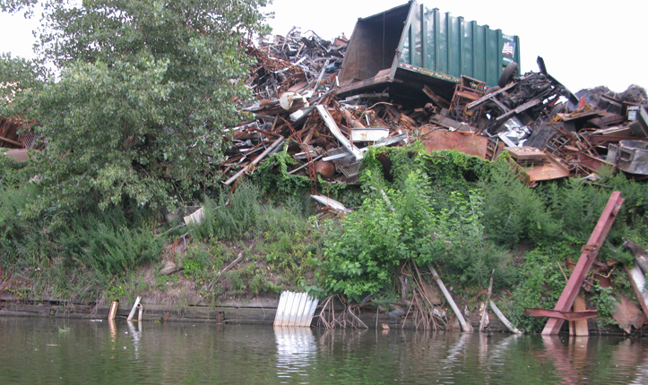
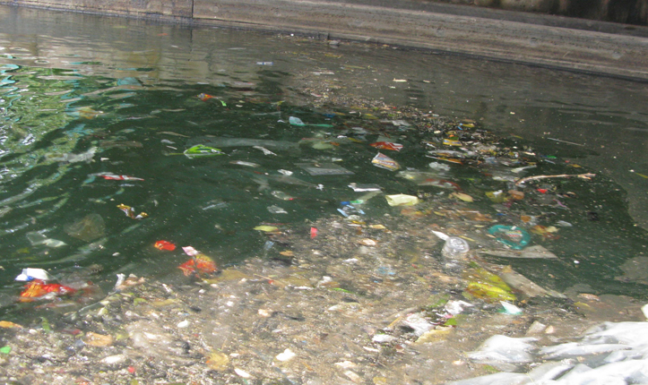
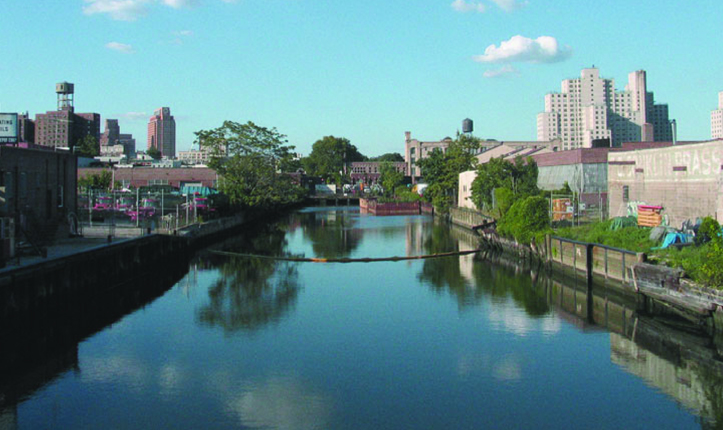
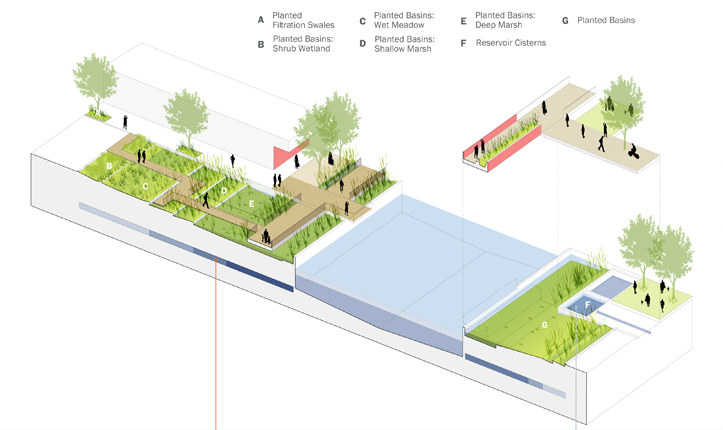
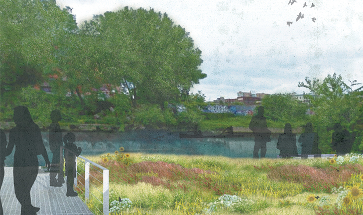
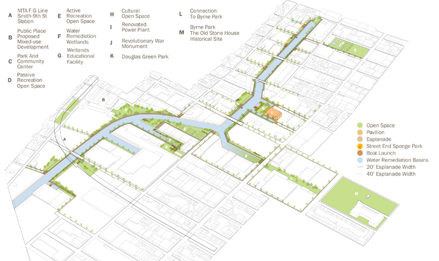
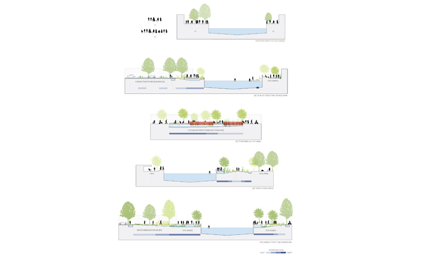
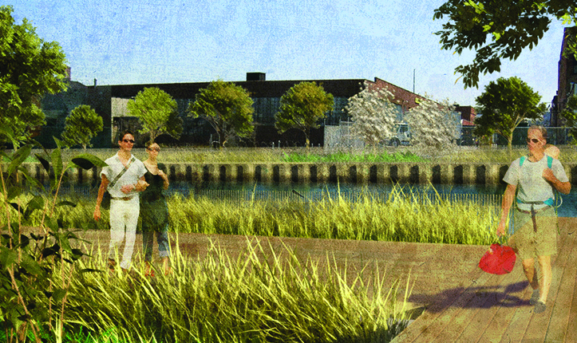

PROJECT TYPE
- Urban
- Re-development Plan
- Park
- Canal
- Trail
- Brownfield
Environmental Benefits
- Cleans Water
- Ecologically Manages Stormwater
- Improves Walkability
- Removes Toxic Chemicals
- Restores Biodiversity

Links
- 2010 Honor Award for Analysis and Planning (ASLA)
- 2011 Honor Award for Regional and Urban Planning (AIA)
- Gowanus Canal (Wikipedia)
- Gowanus Canal Sponge Park (Gowanus Canal Conservancy)
- Gowanus Canal Sponge Park (Spongepark.org)
- Gowanus Canal Sponge Park is Promised More Than $1 Million In Funding (Metropolitan Waterfront Alliance)
Gowanus Canal Sponge Park™
Brooklyn, New York, U.S.A.- 
Close Me!
The Gowanus Canal was once a thriving hub for New York’s maritime and commercial shipping industries. For years, however, factories dumped toxic waste, polluted runoff, and raw sewage directly into the water. Today, properties along the crumbling walls of the canal are littered with remnant garbage and abandoned structures, too hazardous and expensive to attract new development.
ASLA Honor Award Recipient, Gowanus Canal Sponge Park by dlandstudio, llc
(Photo: dlandstudio llc)Photo 1 of 8
- 
Close Me!
Like many cities, New York has a combined sewer system. During heavy rainfalls, raw sewage combines with stormwater runoff, overflowing directly into the Gowanus Canal. The contaminated water contains bacteria and toxic chemicals that endanger people and wildlife.
ASLA Honor Award Recipient, Gowanus Canal Sponge Park by dlandstudio, llc
(Photo: dlandstudio llc)Photo 2 of 8
- 
Close Me!
Even with its highly polluted water and crumbling walls, the Gowanus Canal, as it exists today, still evokes inherent natural beauty. The design for Gowanus Canal Sponge Park™ aims to enhance and showcase this beauty by creating an urban waterfront park along its banks that uses the landscape to clean the water.
ASLA Honor Award Recipient, Gowanus Canal Sponge Park by dlandstudio, llc
(Photo: dlandstudio llc)Photo 3 of 8
- 
Close Me!
The Sponge Park™ earns its name by incorporating landscape buffers and remediation wetlands that slow, absorb, and filter polluted sewer runoff before it enters the Gowanus Canal. In a process called phytoremediation, specially selected plants metabolize pollutants and heavy metals present in the contaminated water. Dirty water from the combined sewer system is captured in underground storage tanks and slowly released into the landscape.
ASLA Honor Award Recipient, Gowanus Canal Sponge Park by dlandstudio, llc
(Photo: dlandstudio llc)Photo 4 of 8
- 
Close Me!
Currently, neighborhood streets dead-end into the Gowanus Canal in a scene of asphalt pavement and metal barrier walls. The new design transforms these derelict, uninspiring spaces into street end pocket parks that offer citizens convenient and usable outdoor space with scenic views of the remediation wetlands and restored canal beyond.
ASLA Honor Award Recipient, Gowanus Canal Sponge Park by dlandstudio, llc
(Photo: dlandstudio llc)Photo 5 of 8
- 
Close Me!
An esplanade, or canal walk, connects the street-end parks and enables people to walk freely up and down the canal. This pedestrian corridor knits together a green fabric of new and existing parks and outdoor public amenities, enhancing livability for the local neighborhoods of Red Hook, Park Slope, and South Brooklyn.
ASLA Honor Award Recipient, Gowanus Canal Sponge Park by dlandstudio, llc
(Photo: dlandstudio llc)Photo 6 of 8
- 
Close Me!
By creating both active and passive public spaces, the Sponge Park accommodates the interests of all people. Public spaces include community gardens, dog runs, performance spaces, cafes, seating areas, boat launches, and exhibition spaces.
ASLA Honor Award Recipient, Gowanus Canal Sponge Park by dlandstudio, llc
(Photo: dlandstudio llc)Photo 7 of 8
- 
Close Me!
Immediate access to 7.4 acres of parkland along the canal will raise real estate values in this depressed community and spark new investment in the area. On a larger scale, treating water pollution at the source means that New York City can spend less tax money building expensive, engineered solutions like water treatment plants.
Photo: ASLA Honor Award Recipient, Gowanus Canal Sponge Park by dlandstudio, llc
(Photo: dlandstudio llc)Photo 8 of 8
Project Facts
- Combined sewer overflows allow over 1.1 million cubic meters of combined sewage to be discharged into the Gowanus Canal annually. New York State classifies the water in Gowanus Canal as Class SD — dangerously polluted. Fishing, swimming, and direct contact with the water are highly discouraged.
- The U.S. Environmental Protection Agency has placed the Gowanus Canal on its Superfund National Priority List. This grant guarantees at least $1 million in funding to clean up the canal.
- The Gowanus Canal Sponge Park™ is a proposed plan to convert 11.4 acres of highly contaminated brownfields into an urban waterfront park. The design dedicates 7.4 acres to greenways and recreational open spaces and the remaining 3.5 acres to wetland basins that remediate the polluted landscape and waterway.
- The innovative park design incorporates natural systems that use specially selected plants to filter toxic runoff water and absorb harmful pollutants before entering the Gowanus Canal.
 This Web site has been made possible through a grant by:
This Web site has been made possible through a grant by: